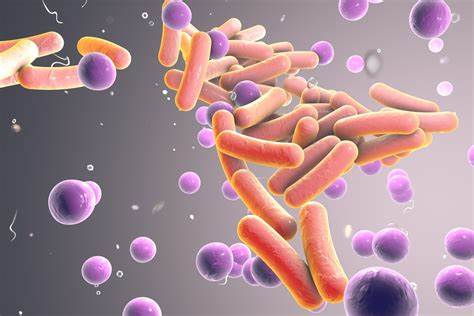

Micro Info - is a platform from which you can all the information about microorganisms. Its the place which can can help you improve your knowledge.
Microbes are tiny living creatures which are invisible to the naked eye. Microbes are also known as microorganisms or microscopic organisms as they could only be seen under a microscope. Certain microbes could cause severe infections and disease that even result in death and others are the beneficial ones and harmless to our lives.